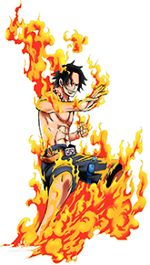

ABOUT
波特卡斯·D·艾斯
Portgas·D· Ace
火拳艾斯
白胡子海贼团二番队队长
烧烧果实
5亿5千万贝里
人物简介
波特卡斯·D·艾斯，是日本动漫《海贼王》中的人物。主角蒙奇·D·路飞的义兄，在目前的故事剧情已经死亡。本名哥尔·D·艾斯，实为"海贼王"哥尔·D·罗杰的遗腹子，长大后因相当痛恨父亲，故改姓生母波特卡斯·D·露玖的姓氏。黑发，常戴着一顶橘色的帽子，在帽子上有奸笑和难过这两种表情图案，而且帽子的绳子绑着一个骷髅头的牌子，是白胡子海贼团第二队队长，实力不凡。曾被一度邀请加入七武海。后被黑胡子击败，并且交与海军，关押在海底大监狱。后因为保护路飞用身体去挡海军大将赤犬的岩浆拳，结果被贯穿了身体。内脏也被烧伤，船医通过检查发现其内脏已被烧坏无法医治，因伤势过重死亡。
外貌
外型特征是一头黑发、平常肤色，两颊有着雀斑（遗传自母亲）。左臂则有"ASCE"字样的刺青，其中S是打叉的，这个本不属于他名字的字母是为了纪念另一个结拜兄弟萨博，同时也有"连萨博的分一起照顾弟弟"的意思，因为三人之中，原本只有萨波懂得礼貌礼仪。萨波失踪以后，艾斯就把萨波温柔礼貌的一面学过来了。另外，艾斯的背部刺有"白胡子海贼团"的图样，这象征着他一生最重视的荣誉。衣着方面，他有一顶橘色牛仔帽，帽沿别有"微笑"和"难过"两种徽章。另外还绑着一个骷髅头的牌子，颈部有一条红珠项链，此外便是他的招牌短裤，幼年时期的艾斯经常穿着背心，衣服上的字样都是以汉字来代替（例如"无罪"、"暴力"、"仁义"、"胜诉"）。虽然艾斯后来成为自然系"烧烧果实"能力者，能将身体变成火焰并用以攻击，但他仍然习惯随身在左腰别上一把匕首。
个性
只要不小心打扰他人，或者是路飞闯下什么样的大祸，都会主动向他人道歉；另外自己用完餐具，都亲自以餐巾来擦拭干净。由此可见，他有着重到礼节的方面（小时候的艾斯也是一个为所欲为的小捣蛋一个，自从得知了义兄萨博死去的消息后，决心要做好哥哥的榜样，照顾好弟弟路飞，于是去拜托酒馆老板玛琪诺小姐教他礼节）。但有些行为也有D家族一贯脱线的表现，到任何餐厅吃完饭，都不会付钱，并且偷偷溜走。他不允许任何人伤害到路飞或诽谤白胡子，否则直接给对方攻击。
the outline of
the story characters
人物经历
以前卡普为了要路飞和艾斯锻炼身体，曾被卡普的朋友训练一段时间。在还没吃到恶魔果实时，经常跟路飞战斗，而且都没有失败过。然后在路飞离开家乡的三年前，正式出航。成立"黑桃海贼团"。后来遇到了红发，开始红发以为他是来向他挑战，不过艾斯马上解释说只是想见一下曾经救过弟弟的恩人。红发得知后十分高兴，大办宴会欢迎艾斯。后来向白胡子挑战，不过不幸败北，"黑桃海贼团"全员被并入白胡子海贼团。开始艾斯非常不服，上百次暗杀白胡子未果。在表明自己是海贼王罗杰（也是白胡子唯一的对手）的儿子后，白胡子不但未将他踢下船，反而一笑置之，这令艾斯终于认可白胡子爱德华·纽盖特是位伟大的海贼，他最终也愿意背负着"白胡子"这个名号。而且以让白胡子成为海贼王做为自己的目标。不久就担任白胡子海贼团的第二队队长。直到自己的部下马歇尔·D·蒂奇杀掉萨奇（白胡子海贼团第四队队长），犯下白胡子海贼团中最恶劣的罪行，并且也是白胡子船上唯一一条铁的戒律──严禁杀害同伴，艾斯十分气愤，表示要去追捕蒂奇。白胡子本想阻止，最后默许。
在巴拿罗岛，找到黑胡子一行人，黑胡子一看到艾斯就很高兴地邀请他来加入黑胡子海贼团，不过艾斯听到黑胡子要追捕路飞时，就直接向黑胡子拒绝，可是遭受范·奥卡和吉萨斯·巴吉斯的攻击，两人被艾斯轻松拿下。之后在黑胡子向其展示黑暗果实能吸尽一切的能力，并再次邀请艾斯他加入黑胡子海贼团之后，被艾斯再次拒绝，以致于跟黑胡子展开一场决斗，最后不幸被黑胡子打倒。黑胡子为得到七武海的称号，将艾斯交给世界政府，送入海底监狱"推进城"。
在海军本部港口马林梵多，开始了对艾斯的公开处刑。艾斯在处刑前3小时被押往处刑台，在处刑台上，海军本部元帅战国在世界面前道出了艾斯的身世。不久，白胡子旗下的海贼的海贼船队出现，目的是营救艾斯。当海军们做好迎击准备时，白胡子所乘的海贼船"莫比迪克号"从湖底突然出现。于是，这场白胡子海贼团对海军本部的大战拉开了序幕。而这起事件的中心人物艾斯，仍被困在处刑台上，被迫与战国一起看着这场惊人的大战。后路飞打飞爷爷卡普（卡普手下留情），登上处刑台。
路飞抵挡了佛之战国的攻击后，在千钧一发之际用Mr.3制作的蜡烛钥匙打开海楼石手铐，成功解救艾斯。白胡子老爹下达了"营救艾斯"的最后船长命令，决心一个人和海军本部同归于尽。 在撤退时，艾斯叩谢白胡子老爹，流泪说道："您是位称职的父亲！"但在一旁的海军大将赤犬却嘲讽白胡子为"时代中的失败者"，艾斯为维护白胡子老爹的名誉，与赤犬一战，却因果实能力相克而被打翻在地。为了保护自己最心爱的弟弟，拼尽全力抵挡住赤犬的杀招，被岩浆烧伤内脏而死。死前让路飞把自己感谢的话语传达给大家，并流泪微笑着说自己已经找到了生存的真正意义，所以人生再没有遗憾。
- 成为海贼...................一
- 进入监狱...................二
- 公开处刑...................三
- 艾斯之死...................四
" 听好了，路飞。我们一定要——活得没有遗憾哦！总有一天要出海！！随心所欲地活着！！比谁都要自由！！！ "